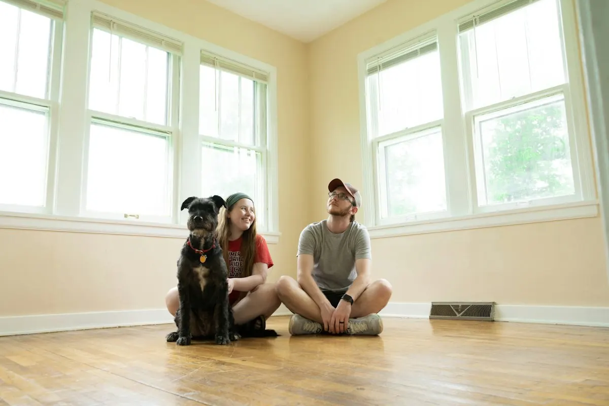

Courtier en prêt immobilier à Valence
Je mets les banques en concurrence. Vous gardez la différence.
Je monte votre dossier, je le présente aux banques et je négocie le taux, l'assurance et les frais, jusqu'à la signature chez le notaire.
Ce que je négocie
Le taux n'est qu'une des quatre lignes du prix.
Une banque qui baisse son taux peut se rattraper ailleurs. Je regarde le coût total de votre crédit, ligne par ligne, avant de vous recommander une offre.
Le taux nominal
Votre dossier présenté à plusieurs banques, avec les arguments qui comptent pour chacune.
L'assurance emprunteur
Souvent le deuxième poste de coût. La délégation d'assurance peut le réduire nettement.
Les frais de dossier
Négociables, et parfois supprimés quand le dossier est solide.
Caution ou hypothèque
Le choix de la garantie change le coût à la signature et à la revente.
Un interlocuteur, du premier appel aux clés
Vous parlez à la même personne du début à la fin.
Pas de plateforme ni de conseiller qui change à chaque appel. Je connais votre dossier, je relance les banques et je vous explique chaque offre avant que vous la signiez.
Daniel B.
Votre projet
Trois situations, trois façons de monter le dossier.
Un premier achat, un investissement locatif ou un prêt déjà en cours ne se défendent pas avec les mêmes arguments devant une banque.

Premier achat
Apport, prêt à taux zéro, prêts aidés : je construis le plan de financement qui passe.
Acheter sa résidence →Investissement locatif
Les loyers attendus, la durée et l'effort mensuel présentés comme une banque veut les lire.
Investir →Prêt en cours
Renégociation, rachat par une autre banque ou changement d'assurance : on calcule si ça vaut le coup.
Faire baisser mon prêt →Ici, entre Rhône et Vercors
Je connais les banques de Valence, et les prix de la Drôme.
Premier échange offert
Racontez-moi votre projet, je vous dis ce qui est faisable.
Une demi-heure au téléphone ou en visio, sans engagement. Mes honoraires ne sont dus qu'une fois votre prêt obtenu.
Demander un rappel